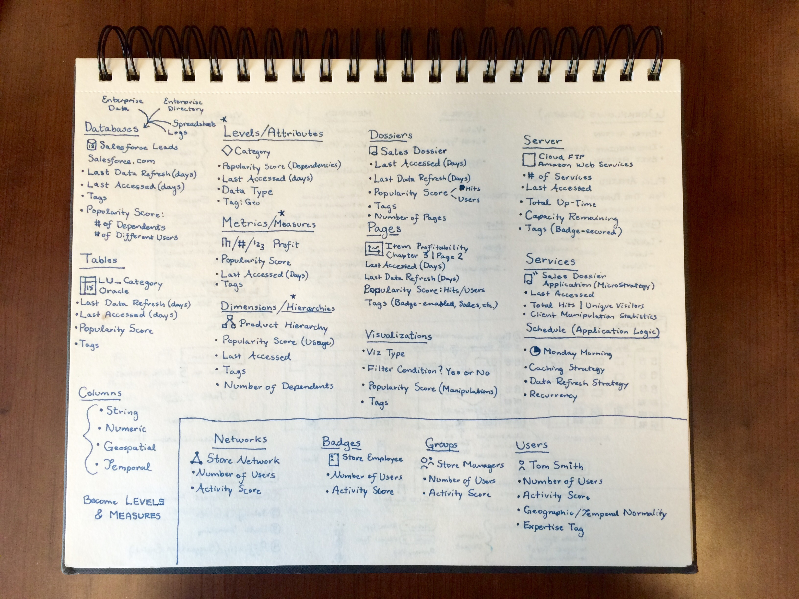

Step 2: Explore the Information Architecture
Once I had a decent idea of the taxonomy of objects with which I was dealing, I then put together some very rough sketches of how these elements might be surfaced.

One of the side projects I was asked to work on was an executive-led vision of creating a single interface that would serve as the aggregation point of ALL content in the system. This idea flies in the face of the convention which calls for simplified interfaces, but it struck me as an interesting task to take on. It just so happens that our customers tend to be highly-intelligent analytical thinkers who prefer functionality over form, so I thought the idea might just be crazy enough to work. Decided, I immediately got to work by auditing all of the objects that would need to be surfaced on this page.
Once I had a decent idea of the taxonomy of objects with which I was dealing, I then put together some very rough sketches of how these elements might be surfaced.
Ugly drawing in hand, I showed this interface to 10 very technical individuals across the Technology, Marketing, HR, and Finance departments and asked them how they would expect to interact with it. Quite honestly, the response was universally negative--nobody knew what to do with the information overload on the screen and they had no idea how to even begin. Though discouraged, I decided to interview the 2 remaining individuals in the Operations department, as originally planned. Unexpectedly, these two individuals raved about how they would finally have the visibility into all of the enterprise assets they needed to understand and monitor the business. They even asked if we planned to add a mechanism by which they could add more information to the already-busy screen.
Those last two user interviews forever changed the way that I approach design. Simplicity is a powerful general concept, but managing and scaling an interface to handle complexity and specialized use cases is far more important. Therefore, my recommendation at the end of the project was to provide a mechanism to let the user augment the out-the-box experience so that they could add content that they wanted. But more importantly, based on my research, a separate research project was kicked off to explore whether we should provide multiple default experiences to users based upon their security and role privileges in the system.